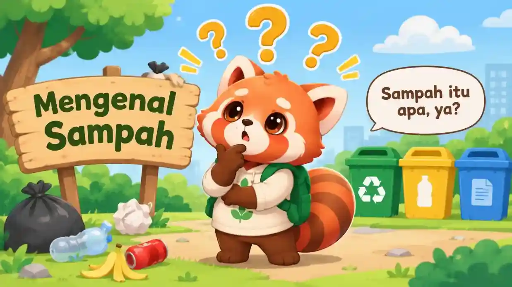
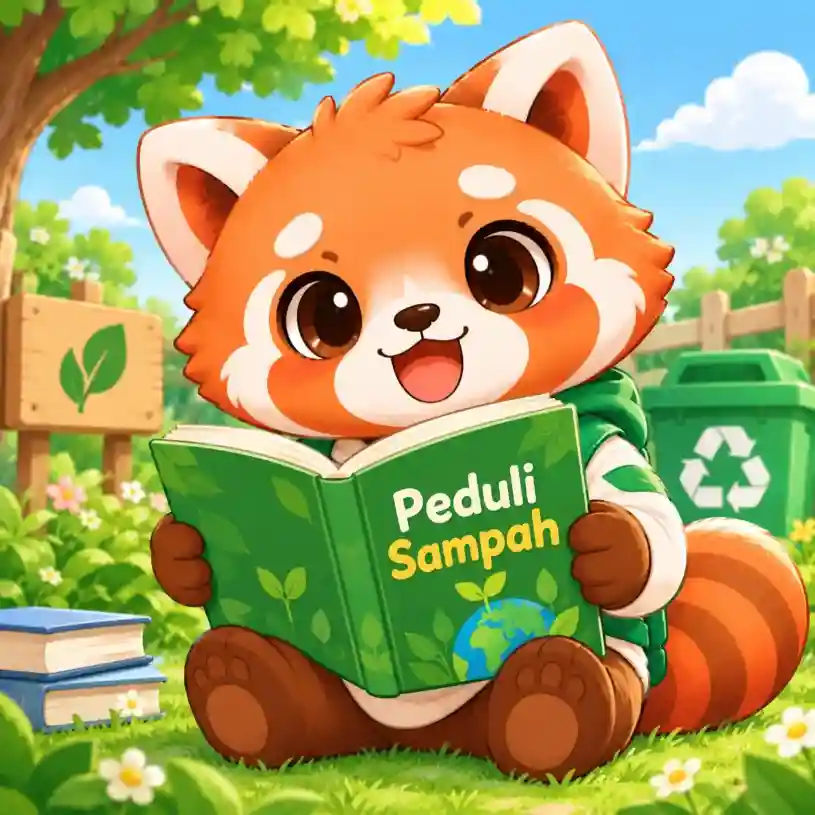
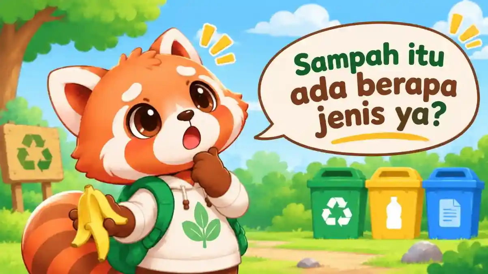
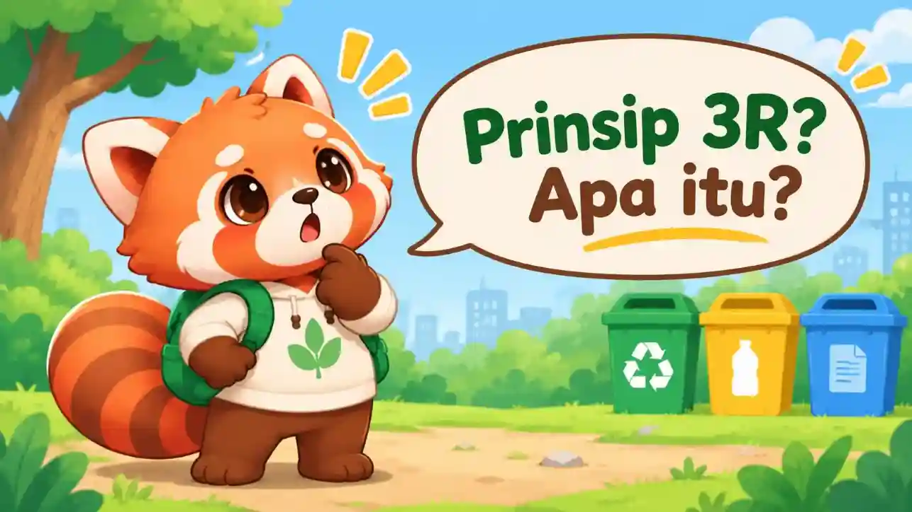
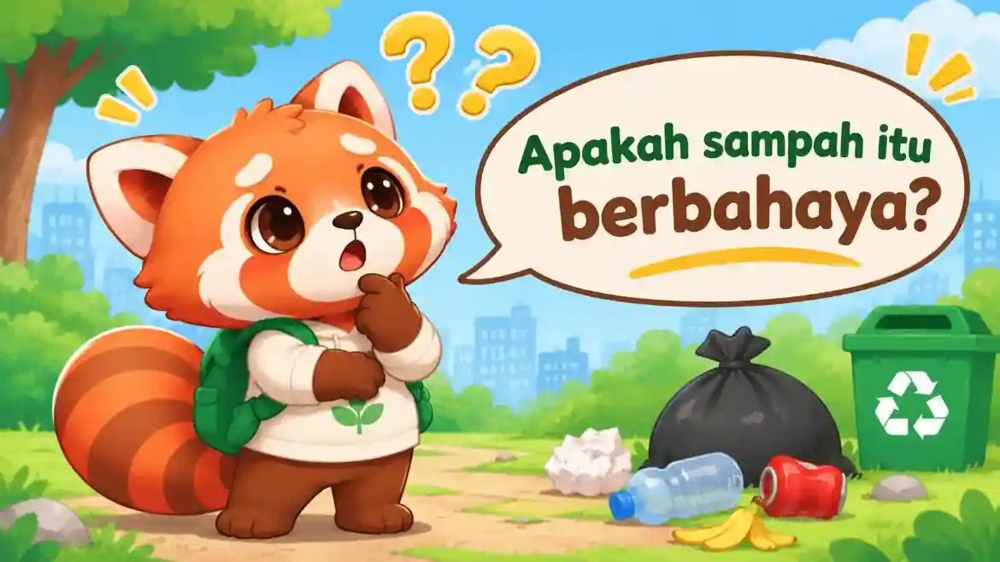
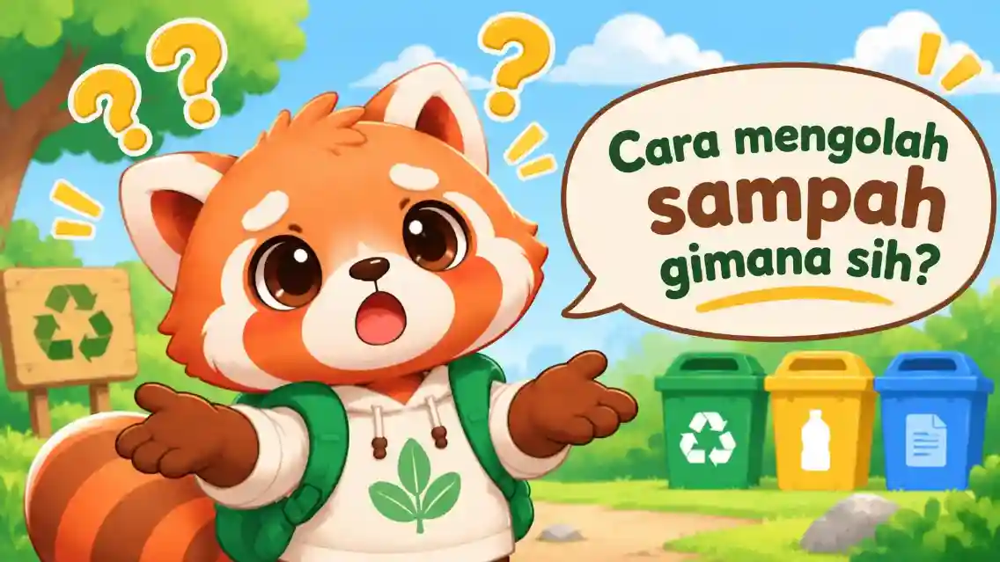
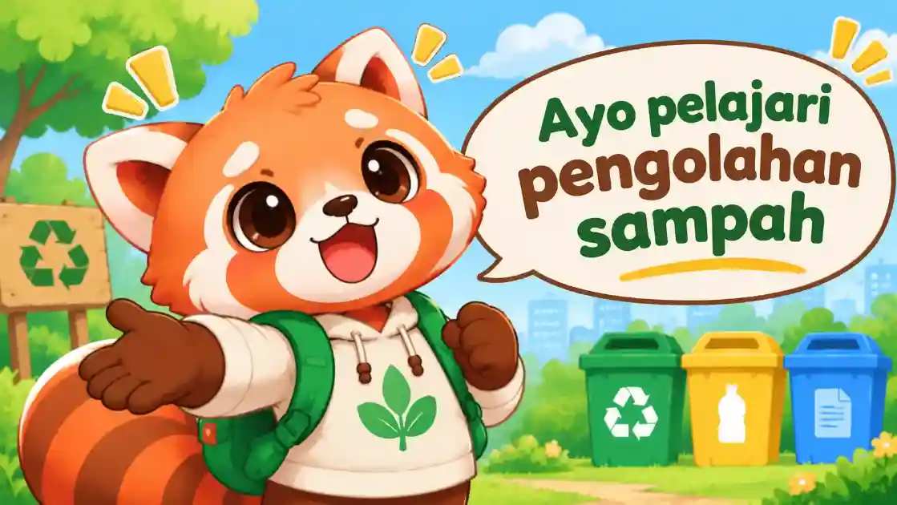
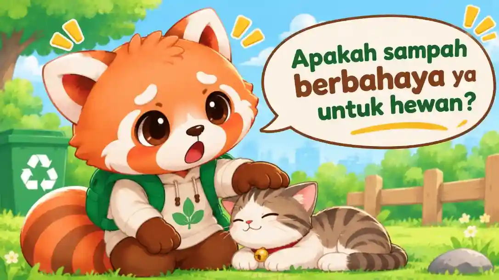
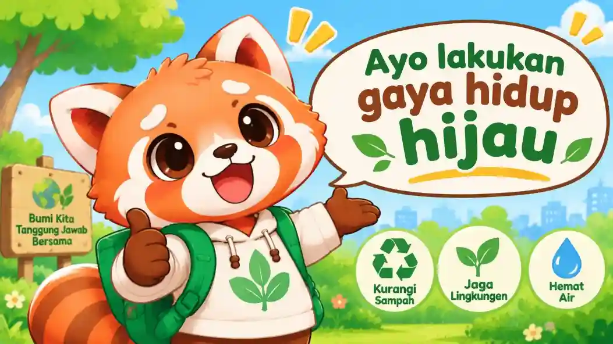

Mengenal Sampah
Apa itu sampah dan dari mana asalnya di kehidupan sehari-hari? Kenali jejaknya!
Ayo kita belajar bersama untuk mengolah, mengenal, dan mengubah sampah menjadi barang yang berguna dengan menggunakan materi pembelajaran dan kuis bersama Rani si panda merah

Rani's Tip:
Pilah sampahmu sebelum sampahmu merusak alam kita!

Apa itu sampah dan dari mana asalnya di kehidupan sehari-hari? Kenali jejaknya!

Pilah organik, anorganik, B3, serta residu secara tepat agar memudahkan pengolahan.

Reduce, Reuse, Recycle dalam kebiasaan sederhana sehari-hari untuk menjaga bumi.

Bagaimana sampah liar merusak lautan, tanah subur, dan kesehatan makhluk hidup.

Praktik langsung 3 wadah warna di rumah dan sekolah tanpa ribet dan menyenangkan.

Dari sampah botol plastik jadi barang bermanfaat baru! Pelajari proses daur ulangnya.

Selamatkan satwa laut dan darat dari bahaya jeratan sampah plastik liar di habitatnya.

Bawa tumbler dan tas kain ke sekolah setiap hari. Aksi kecil berefek besar bagi bumi!
Penjelasan materi edukasi akan tampil di sini...